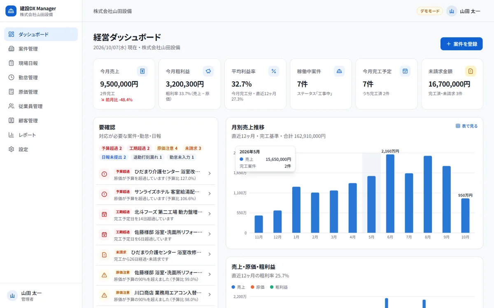
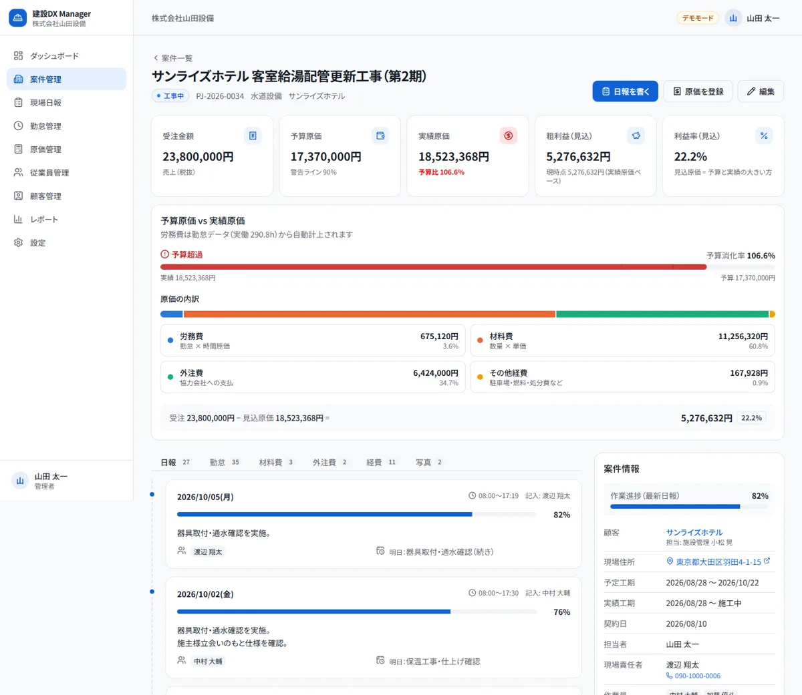
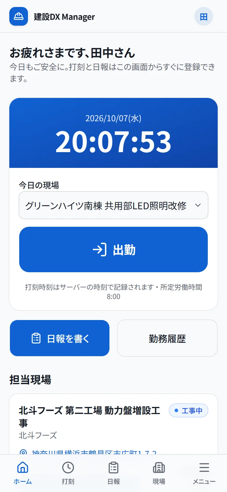
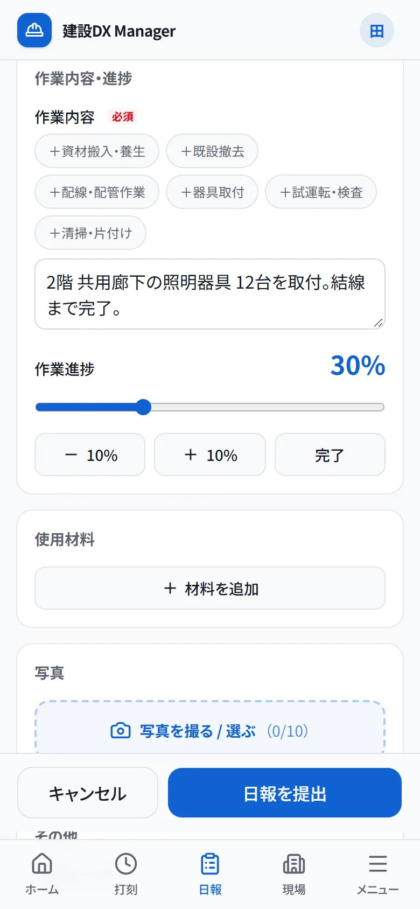

建設DX Manager
建設・設備工事会社の日報・勤怠・原価を案件ごとにつなぎ、工事ごとの利益を見える化する業務システムです。
- Client
- 10〜50名規模の建設会社・設備工事会社
- Users
- 経営者・事務（管理者）
現場責任者・現場スタッフ - Demo
- 3つの役割でログイン可能。
毎日4:00に初期状態へ

Overview
プロジェクト概要
「案件登録 → 現場作業 → 日報 → 勤怠 → 原価 → 売上・利益」を、案件IDを中心に一元管理するシステムです。
現場スタッフはスマートフォンで打刻と日報を入力し、管理者は工事ごとの利益と会社全体の状況をダッシュボードで確認します。
Problem
想定した業務課題
- 現場日報が紙で、事務所で回収して転記している
- 勤怠をタイムカードや Excel で管理し、月末に手で集計している
- 案件台帳と原価を、Excel に二重に入力している
- 工事ごとの原価と利益が、終わってみるまで分からない
- 工期や原価の超過、請求漏れに気づくのが遅れる
Solution
解決方法
- 日報はスマートフォンから写真付きで提出し、案件ごとに時系列でまとまります。
- 出勤・退勤ボタンで打刻し、実働時間と残業時間を自動で計算します。
- 勤怠から労務費を自動で計上し、材料費・外注費・経費も案件に紐付けます。
- 予算原価と実績原価、粗利益・利益率を、案件ごとにその場で表示します。
- 工期超過・原価超過・未請求・日報未提出・打刻漏れを「要確認」に自動で表示します。
Features
主要機能
- 案件管理
- 売上・原価・粗利益・利益率の一覧。予算と実績のメーター（90%で警告、超過で赤表示）。
- 現場日報
- スマートフォン向けの入力。施工前・施工中・施工後の写真を添付。
- 勤怠管理
- 出勤・退勤の打刻、月次勤怠、案件別の作業時間と労務費。
- 原価管理
- 労務費・材料費・外注費・経費を集計し、総原価・粗利益・予算消化率を自動計算。
- 経営ダッシュボード
- 月別の売上推移、工事種別・担当者別の集計、要確認の一覧。
- 権限
- 管理者・現場責任者・一般スタッフで見られる範囲を分け、データベースでも同じ範囲に制限。
Screens
スクリーンショット



Tech
使用技術
- Next.js 16（App Router・Server Actions）
- TypeScript
- Supabase（PostgreSQL・Auth・Storage）
- PGlite（デモモード）
- Tailwind CSS 4
- shadcn/ui
- Recharts
- Zod
- Vitest
- Vercel
- すべてのクエリを RLS 付きで実行し、権限外のデータはデータベースが返さないようにしています。
- 原価計算はデータベースのビューにまとめ、テストで独立した再計算と照合しています。
- 金額は円単位の整数で厳密に保持し、端数の誤差が出ないようにしています。
Links
デモ・ソースコード
- デモkensetsu-dx-manager.vercel.app（新しいタブで開きます）
- GitHubgithub.com/tono3679-creator/kensetsu-dx-manager（新しいタブで開きます）
ログイン画面の「デモアカウントでログイン」から、管理者・現場責任者・一般スタッフの各役割で操作できます。データは毎日 4:00（日本時間）に初期状態へ戻ります。